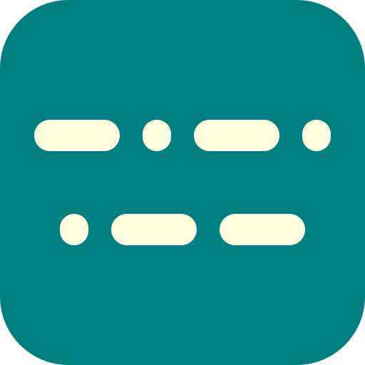

Seiuchy NG
Head copy practice. An operator sends you one thing worth logging — a name, a callsign, a QTH, a report — buried in the usual on-air padding. Don't write it all down; catch the part that matters and type it.
| Past QSOs | Log |
|---|
Instructions
The filler is the point. Real overs are mostly words you never write down — tnx om, hw cpi, rr — and hearing them over and over here teaches you to let them wash past while you wait for the one thing that belongs in the log. That is what lets you follow a QSO as it happens instead of transcribing it first and reading it afterwards.
Set your sidetone pitch and speed, put your own name in (it gets sent back at you), and untick any category you are not ready for. Start begins; after that the button reads Answer and each press marks what you typed and sends the next one. Enter does the same thing.
Type the answer only, not the sentence around it: 43, not “43 years old”. Once is enough even when it is sent twice. A leading nr is ignored, so “nr york” and “york” both pass. Rigs are the fiddly ones — type them as sent, spaces and all: ic 7300, and ic7300 is accepted too.
In the contest category, log what the number means, not what you heard: a serial sent as T4N goes in as 049. The leading 599 is optional. For a club number the number itself is what counts; if you also type the club it has to be the right one.
You get a C back if you were right and a ? if you were not, sent slightly faster and lower so you cannot mistake it for the QSO. The log shows green for right, red for wrong, and orange for right after a repeat.
Again resends the same exchange as often as you like. It costs you nothing except the point: a correct answer after a repeat still counts as an attempt, but does not raise your score.
With automatic speed adjustments the trainer chases your limit — a wpm faster each time you are right, a wpm slower each time you are wrong. Answering right after a repeat holds the speed where it is.
The grid contests need your own locator to be any use: with it, stations turn up at plausible distances and bearings from you rather than at random spots on the globe. Local only keeps everyone inside a few hundred kilometres, which is the realistic case on VHF.
The key setting decides who is at the other end. A computer sends perfectly and teaches you nothing about real signals. A keyer gets the dits and dahs exactly right and only wanders in the gaps. A straight key wobbles everywhere, and the worse the operator, the wider the wobble. A bug fires machine-gun dits against hand-made dahs, and a bad one will hand you a stray dot in the middle of a number. Elmer and Farnsworth leave the characters crisp and stretch the spaces instead — the right way to practise when the characters themselves are still hard.
Nothing here talks to the network, stores a cookie or counts you. Add it to your home screen and it works with the phone in flight mode.